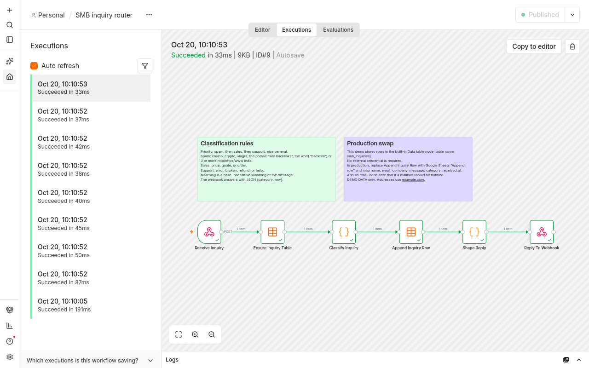
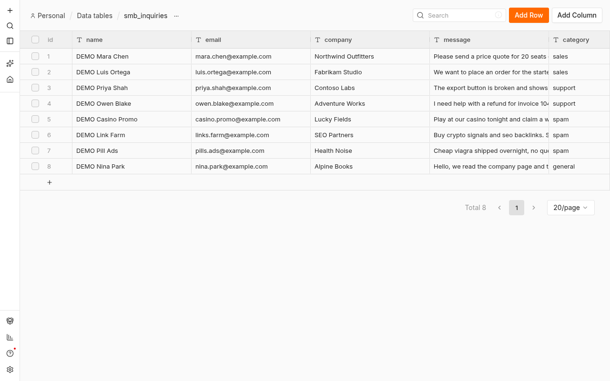

它做什么
小团队可以把这个工作流放在联系表单前面。询价、故障和明显的垃圾信息会分成不同类别，每次成功调用都留下一行，以后可以改接到表格。
流程
POST /webhook/smb-inquiry
|
v
Ensure Inquiry Table 数据表创建，名称 smb_inquiries，已存在则复用
|
v
Classify Inquiry 下面的关键词规则
|
v
Append Inquiry Row 数据表插入一行
|
v
Shape Reply JSON：category 与 row
|
v
Reply To Webhook
分类规则
先把留言转成小写。命中的第一组生效。
- spam — casino、crypto、viagra、短语 “seo backlinks”、单词 “backlink”，或 http / https / www 链接达到三条及以上。
- sales — price、quote 或 order。
- support — error、broken、refund 或 help。
- general — 其余情况。
匹配的是子串，因此 “errors” 算支持，“quotes” 算销售。垃圾信息先于销售和支持判断。
截图



结果
| 姓名 | 邮箱 | 公司 | 留言 | 类别 | 时间 |
|---|---|---|---|---|---|
| DEMO Mara Chen | mara.chen@example.com | Northwind Outfitters | Please send a price quote for 20 seats of the annual plan. | sales | 2026-10-20T02:10:52.563Z |
| DEMO Luis Ortega | luis.ortega@example.com | Fabrikam Studio | We want to place an order for the starter package this week. | sales | 2026-10-20T02:10:52.649Z |
| DEMO Priya Shah | priya.shah@example.com | Contoso Labs | The export button is broken and shows an error after login. | support | 2026-10-20T02:10:52.725Z |
| DEMO Owen Blake | owen.blake@example.com | Adventure Works | I need help with a refund for invoice 1042. | support | 2026-10-20T02:10:52.798Z |
| DEMO Casino Promo | casino.promo@example.com | Lucky Fields | Play at our casino tonight and claim a welcome bonus. | spam | 2026-10-20T02:10:52.853Z |
| DEMO Link Farm | links.farm@example.com | SEO Partners | Buy crypto signals and seo backlinks. See https://example.com/a https://example.com/b https://example.com/c | spam | 2026-10-20T02:10:52.909Z |
| DEMO Pill Ads | pills.ads@example.com | Health Noise | Cheap viagra shipped overnight, no questions asked. | spam | 2026-10-20T02:10:52.968Z |
| DEMO Nina Park | nina.park@example.com | Alpine Books | Hello, we read the company page and the catalog looks clear. | general | 2026-10-20T02:10:53.022Z |
如何导入
- 使用 n8n 社区版 2.43.x。本文件在 2.43.8 上导入并发布成功。
- 下载 workflow.json。
- 在工作流列表选择从文件导入，或执行
n8n import:workflow --input=workflow.json。 - 发布工作流。2.43 的命令是
n8n publish:workflow --id=WORKFLOW_ID。 - 向
/webhook/smb-inquiryPOST JSON，字段为 name、email、company、message。第一次调用会创建数据表smb_inquiries。
换成 Google 表格或邮件通知
示例把最后的存储节点做成内置数据表，因此不需要凭据。生产环境中，把 Append Inquiry Row 换成 Google Sheets 的 Append row，并映射 name、email、company、message、category、received_at。如果需要通知某人，在同一条成功路径上加 Gmail 或 SMTP 节点。Reply To Webhook 保持在最后，调用方仍然收到 {category, row}。